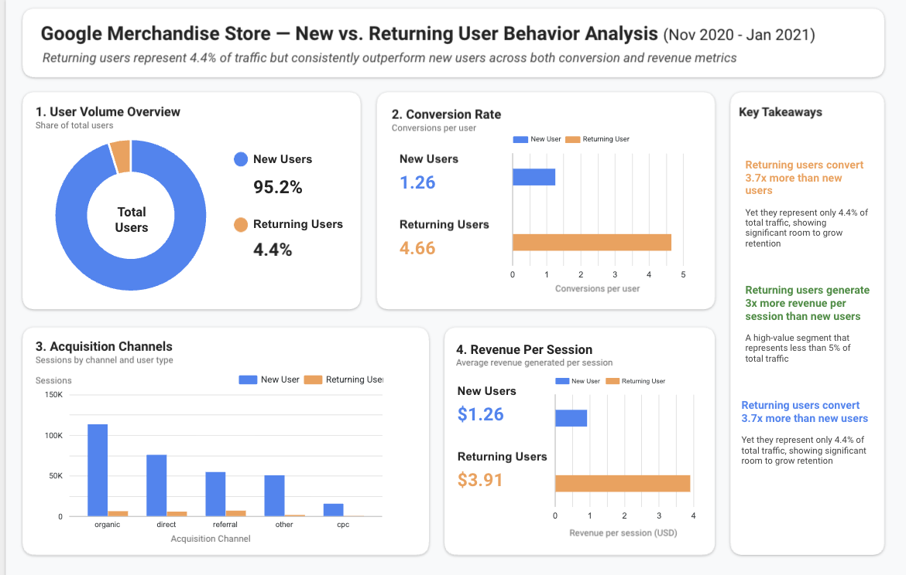

01
How does user behavior differ between new and returning users on the Google Merchandise Store?
Dug into GA4 ecommerce data to quantify how new and returning users differ across conversion, revenue, and acquisition. Found returning users convert 3.7x more and generate 3x more revenue per session — yet represent less than 5% of traffic. Recommended shifting budget toward retention and re-engagement over acquisition to maximize revenue per user.